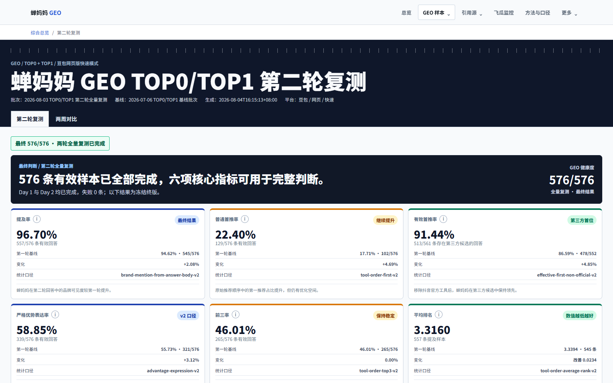
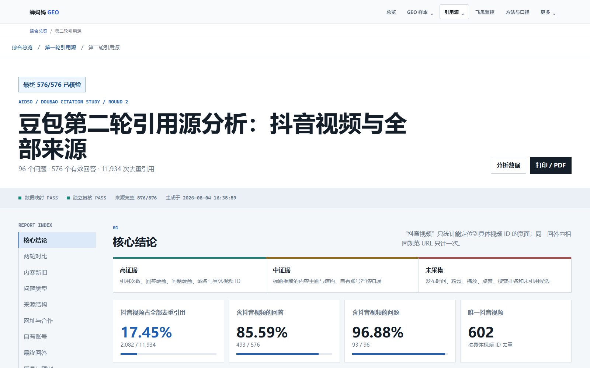
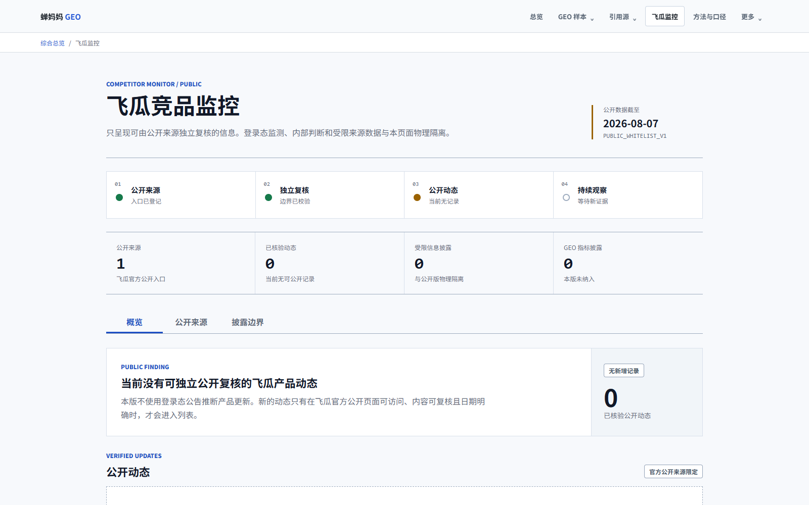

SWISS RESEARCH CONSOLE / 2.0
蝉妈妈 GEO
研究控制台
定位品牌可见性、回答引用与竞品公开动态。这里提供状态、口径和入口，不替代各业务仪表盘。
COMPARABLE CHANGE
当前可比较的轮次变化
仅陈述两轮观测差异，不作因果解释。
MODULE DIRECTORY
全部研究模块
按研究任务进入，不改变任何旧 URL、筛选或深链。
LIVE MODULE PREVIEW
三个研究方向，一次点击可达
预览仅用于识别模块，结论以目标页面标注为准。



METHOD & SCOPE
方法与口径
平台展示特定问题、平台和时间窗口下的采样结果，用于内容与品牌 GEO 研究，不代表全网绝对份额。
- GEO 样本
- 第二轮最终 576/576，豆包网页端快速模式，截至 2026-08-04。
- 引用口径
- 按回答中可核验的去重引用事件与规范化 URL 统计，截至 2026-08-04。
- 飞瓜监控
- 仅收录官方公开、日期明确且可独立访问的页面；截至 2026-08-07 暂无公开动态。
- 使用边界
- 轮次差异不代表因果；第三方页面与模型回答会随时间变化。